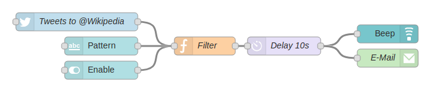
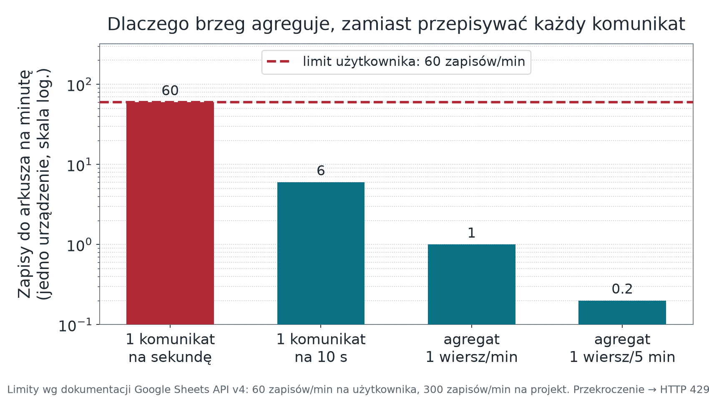

Brzeg sieci, Node-RED i zapis do Google Sheets
Wykład 5 — miejsce, w którym odrzucamy to, czego nie wolno zapisać
prof. UPP dr hab. inż. Marek Urbaniak
Wydział Inżynierii Środowiska i Inżynierii Mechanicznej
Uniwersytet Przyrodniczy w Poznaniu
Po co ten wykład
Pytanie modułu: kto decyduje, czy pomiar zasługuje na zapisanie — i co się dzieje z tym, który nie zasługuje?
Cele
- Wymienić pięć zadań brzegu sieci, nie tylko agregację.
- Zbudować przepływ z jawną ścieżką błędu i logiem powodów odrzucenia.
- Dobrać wariant zapisu do arkusza świadomie — wraz z konsekwencją dla bezpieczeństwa.
- Policzyć częstość zapisu wobec limitów interfejsu, zanim powstanie przepływ.
Droga
- Od surowych danych do wiedzy
- Brama brzegowa i jej pięć zadań
- Przepływ Node-RED węzeł po węźle
- Reguły walidacji i log odrzuceń
- Dwa warianty zapisu do arkusza
- Limity, ponowienia, agregacja
Brzeg sieci
Fot. RAIL P, CC0
Od gigabajtów do wiedzy
- Pojedynczy czujnik temperatury w chłodni to mało danych i prosta decyzja.
- Dziesięć tysięcy czujników w stu magazynach, raportujących co minutę, to już problem składowania i filtrowania.
- Pytanie nie brzmi „gdzie to zmieścić”, tylko „co z tego jest potrzebne do decyzji”.
- Redukcja następuje blisko źródła, bo tam najtaniej oszczędzić łącze i zapis.
Brama brzegowa — pięć zadań
- Redukcja i agregacja — zamiast strumienia tysięcy próbek drgań na sekundę, wpis „stan łożyska: stabilny”.
- Buforowanie przy braku łącza — pomiary nie giną, gdy sieć nadrzędna zniknie.
- Tłumaczenie protokołów — radio lokalne po jednej stronie, IP po drugiej.
- Reagowanie lokalne — gdy decyzja nie może czekać na odpowiedź z chmury.
- Decyzja o jakości danych — co wolno zapisać (następny slajd).
Latency
Czas przejścia danych od urządzenia do chmury i z powrotem z komendą bywa krytyczny. Dlatego inteligencję przesuwa się bliżej brzegu — nie dla mody, tylko dlatego, że zawór czy wentylator nie może czekać na łącze o opóźnieniu 300 ms. Funkcje bezpieczeństwa maszyn i tak realizuje osobny układ (np. sterownik bezpieczeństwa wg ISO 13849), nie brama.

Raspberry Pi jako brama brzegowa. Fot. Laserlicht, CC BY-SA 4.0
Piąte zadanie: decyzja o jakości danych
Node-RED jest miejscem decyzji o jakości danych: punktem, w którym odrzucamy błędny pomiar, zanim trafi do arkusza i na wykres. Nie jest jedynie narzędziem do szybkiego łączenia czujnika z pulpitem i powiadomieniem.
Dlaczego nie urządzenie?
Urządzenie waliduje zakres fizyczny — to jego obowiązek z modułu 02. Ale nie zna kontekstu: nie wie, czy jego zegar jest zsynchronizowany, czy inny węzeł nie przysłał już tej samej próbki, ani czy wersja schematu jest nadal obsługiwana.
Dlaczego nie platforma?
Platforma zapisuje to, co dostanie. Odrzucenie na platformie oznacza, że błędna wartość już jest w szeregu czasowym i trzeba ją usuwać — a w międzyczasie wywołała alarm.
Przepływ bez walidacji nie spełnia wymagań tego modułu.
Przepływ
Fot. Kim Scarborough, CC BY-SA 2.0
Node-RED — węzeł po węźle

1-Byte, Node-RED Example, Wikimedia Commons, CC BY-SA 4.0.

Dwie zasady konstrukcyjne: komunikat nieparsowalny trafia na ścieżkę błędu, nie dalej w przepływ, a dla jednego strumienia wybieramy jeden wariant zapisu — nigdy dwa naraz.
Minimalny zestaw reguł walidacji
schemazgodne z obsługiwaną wersją — inaczej odrzucenie z powodem „nieobsługiwana wersja schematu”.- Każde pole wymagane obecne i o właściwym typie —
"22.5"jako tekst to nie to samo co22.5. - Wartość w zakresie fizycznym czujnika, nie w zakresie typu danych.
-40…+85 °C, a nie „cokolwiek, co zmieści się wfloat“. - Znacznik czasu nie z przyszłości i nie starszy niż maksymalny czas buforowania — pomiar dosłany z bufora jest poprawny; do alarmu bierzemy tylko świeże (≤ 2 okresy raportowania).
- Licznik
seqnie powtarza wartości sprzed chwili — wykrycie duplikatu z QoS 1.
Każde odrzucenie zapisujemy z powodem
Sam licznik odrzuceń nie pozwala niczego zdiagnozować. „W ciągu doby odrzucono 1841 komunikatów” nie mówi nic. „1840 × nieobsługiwana wersja schematu, 1 × wartość poza zakresem” wskazuje przyczynę w jednej linii — i to jest jedyny cel logowania.
Zapis do arkusza
Fot. NASA Glenn Research Center, domena publiczna
Dwa warianty zapisu
| Cecha | Dydaktyczny: Apps Script | Serwerowy: Sheets API v4 |
|---|---|---|
| Kto zapisuje | aplikacja internetowa Apps Script wywołana metodą POST | pośrednik po stronie serwera: Node-RED albo własny backend |
| Interfejs | doPost(e) → walidacja → appendRow |
spreadsheets.values.append w REST API v4 |
| Uwierzytelnianie | przy dostępie „Anyone” adres URL wdrożenia pełni funkcję sekretu | konto usługi i token OAuth 2.0 |
| Ryzyko | ujawnienie adresu = prawo zapisu dla każdego, z uprawnieniami właściciela skryptu | klucz konta usługi wymaga bezpiecznego magazynu i rotacji |
| Kontrola dostępu | ograniczona, po stronie skryptu | pełna: uprawnienia arkusza nadawane kontu usługi |
| Kiedy dopuszczalny | ćwiczenie laboratoryjne, dane nieosobowe | każde użycie poza demonstracją |
Bezpieczeństwo Apps Script
Adres wdrożenia Apps Script jest sekretem, a nie publicznym endpointem. Kto zna adres, może zapisywać do arkusza. Wariant ten dopuszczamy wyłącznie dla danych nieosobowych w ćwiczeniu; poza laboratorium wymagany jest pośrednik serwerowy z kontem usługi.
Limity, które trzeba znać wcześniej
Interfejs Google Sheets API v4 ma limity żądań odnawiane co minutę (Apps Script ma własne, inne limity):
| Rodzaj | Na projekt | Na użytkownika w projekcie |
|---|---|---|
| Odczyty | 300 / min | 60 / min |
| Zapisy | 300 / min | 60 / min |
Przekroczenie limitu zwraca HTTP 429. Dokumentacja wprost zaleca ponowienie z wykładniczym wycofaniem.
Rachunek, który zmienia projekt
Urządzenie raportujące co sekundę to 60 żądań zapisu na minutę — cały limit użytkownika na jeden czujnik. Konto usługi to jeden „użytkownik”: wszystkie urządzenia za nim dzielą ten sam limit.

Dlatego arkusz otrzymuje dane zagregowane i wsadowo — jedno żądanie append może dopisać wiele wierszy — a nie każdy komunikat osobno. Agregacja to zadanie brzegu, nie arkusza.
Ponowienia, kolejność, granice arkusza
- Błąd zapisu nie kończy przepływu — komunikat wraca do kolejki z rosnącym opóźnieniem, a po limicie prób trafia do logu odrzuceń.
- Kolejność wierszy nie jest gwarantowana — sortujemy po
ts.
- Arkusz nie jest bazą telemetryczną: limit komórek na plik (rzędu 10–20 mln), brak indeksów czasowych. Szeregi czasowe trzyma platforma (moduł 06).
Rozróżnienie, które ratuje przepływ: 429 i 5xx ponawiamy — problem jest przejściowy. Pozostałe 4xx (np. 403, brak uprawnień) nie: ponowienie da ten sam wynik i zatka kolejkę. Wyjątek: 401 — po odświeżeniu tokenu ponawiamy raz.
Autoryzacja i typowe błędy eksportu
Konto usługi — co trzeba zrobić
- Włączyć Sheets API. Arkusz zakłada człowiek — konto usługi nie ma miejsca na Dysku.
- Utworzyć konto usługi i klucz JSON (w nowych organizacjach bywa zablokowane polityką).
- Udostępnić arkusz e-mailowi konta usługi — krok pomijany najczęściej.
- W przepływie podać ID arkusza i zakres.
Co zwraca interfejs, gdy coś nie gra
| Kod | Typowa przyczyna |
|---|---|
| 401 | token wygasł albo jest nieprawidłowy |
| 403 | arkusz nieudostępniony kontu usługi, albo API nie włączone w projekcie |
| 404 | zły identyfikator arkusza |
| 429 | przekroczony limit — ponów z wycofaniem |
| 400 | błędna składnia zakresu, nazwa karty albo valueInputOption |
Higiena sekretów w sprawozdaniu
Klucz konta usługi i adres Apps Script nie trafiają do eksportu przepływu, zrzutów ani repozytorium. Node-RED pomija pola poświadczeń, ale nie chroni sekretu wpisanego w URL, kod function czy zwykłą właściwość węzła.
Test odbioru przepływu
- Poprawny komunikat pojawia się w arkuszu jako jeden wiersz z jednostkami w nagłówku.
- Komunikat z wartością poza zakresem fizycznym nie pojawia się w arkuszu, ale pojawia się w logu z powodem odrzucenia.
- Komunikat nieparsowalny nie zatrzymuje przepływu.
- Po odcięciu połączenia z internetem przepływ ponawia zapis i nie traci pomiarów z bufora o zadanym rozmiarze.
- Sekret nie występuje w eksporcie przepływu oddawanym jako sprawozdanie.
Pytania sprawdzające
- Zespół podłączył przez Sheets API trzy urządzenia raportujące co sekundę, wszystkie przez jedno konto usługi; po chwili zapisy przestały się pojawiać, a w logu są kody 429. Wskaż, dlaczego zwiększenie liczby ponowień pogorszy sytuację, i podaj poprawkę architektoniczną.
- W arkuszu jest wiersz z temperaturą 512 °C i znacznikiem czasu sprzed tygodnia. Które dwie reguły walidacji zostały pominięte i w którym węźle przepływu powinny były zadziałać?
- Przepływ zapisuje jednocześnie przez Apps Script i przez konto usługi, „dla pewności”. Podaj dwa konkretne problemy, jakie to powoduje — jeden dotyczący danych, drugi bezpieczeństwa.
Podsumowanie i przejście
Co zostaje z tego modułu
- Brzeg ma pięć zadań, a w naszym pilocie najważniejsze jest piąte: decyzja o jakości danych.
- Komunikat nieparsowalny idzie na ścieżkę błędu, nie dalej w przepływ.
- Każde odrzucenie ma powód zapisany w logu.
- Adres wdrożenia Apps Script jest sekretem.
- 60 żądań zapisu na minutę to cały limit użytkownika — dlatego brzeg agreguje i wysyła wsadowo.
- Arkusz jest warstwą raportową, nie bazą telemetryczną.
Moduł 06 — platforma
Dane, które przeszły walidację, trafiają do platformy. Zaczniemy nie od wykresu, tylko od modelu danych: co jest urządzeniem, co telemetrią, co atrybutem i kto ma prawo to zmienić.
Źródła
- Google, Usage limits dla Google Sheets API — limity odczytu i zapisu, kod 429, wycofanie wykładnicze: https://developers.google.com/workspace/sheets/api/limits
- Google,
spreadsheets.values.append(REST, Sheets API v4): https://developers.google.com/workspace/sheets/api/reference/rest/v4/spreadsheets.values/append - Google Apps Script — obsługa żądań HTTP w aplikacji internetowej (
doPost): https://developers.google.com/apps-script/guides/web - Node-RED — budowa i struktura komunikatu: https://nodered.org/docs/user-guide/messages
- Node-RED — obsługa błędów (węzeł
catch): https://nodered.org/docs/user-guide/handling-errors - Google Apps Script — limity usług: https://developers.google.com/apps-script/guides/services/quotas
- Google Cloud — domyślne polityki organizacji (blokada kluczy kont usług): https://cloud.google.com/resource-manager/docs/secure-by-default-organizations
- Node-RED — węzły MQTT: https://cookbook.nodered.org/mqtt/
Internet Rzeczy · Wykład 5 — Brzeg sieci, Node-RED i Google Sheets